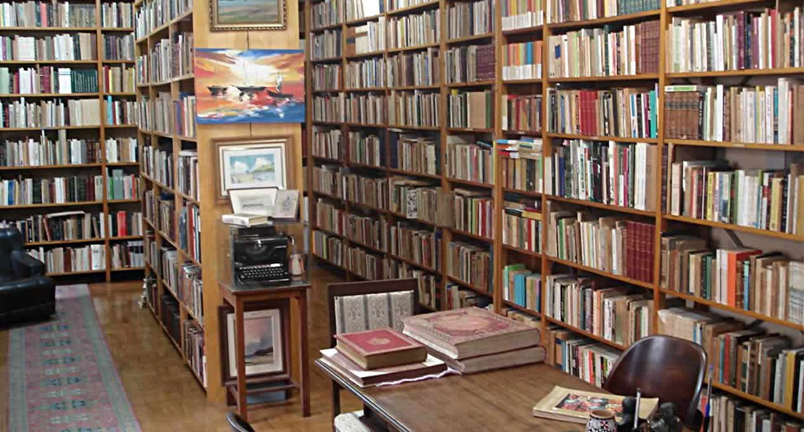
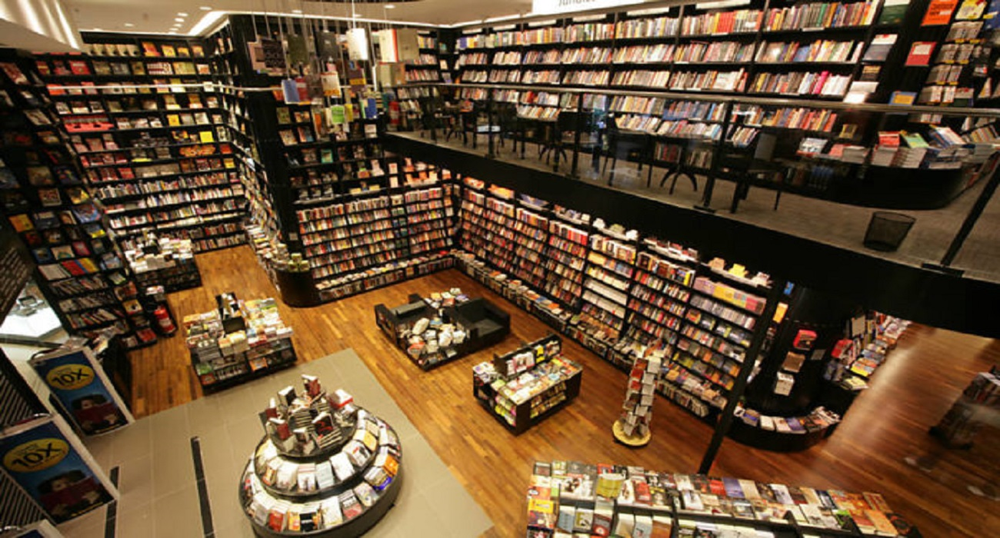
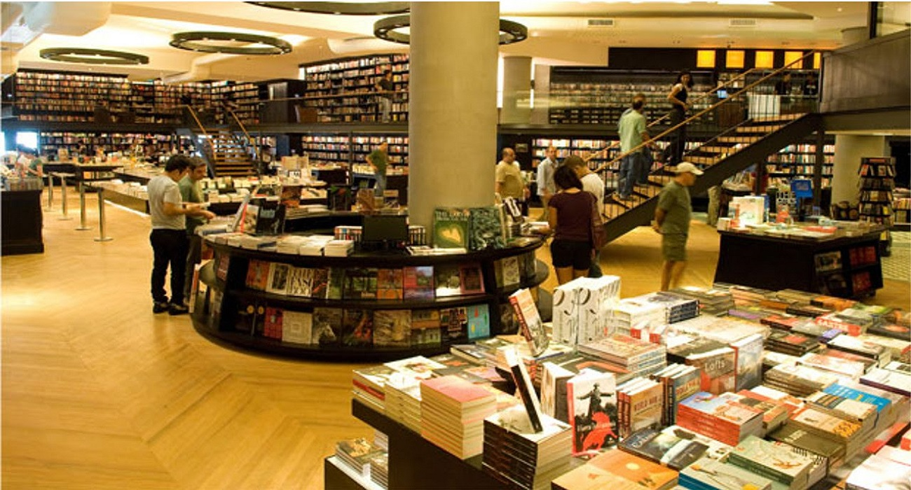
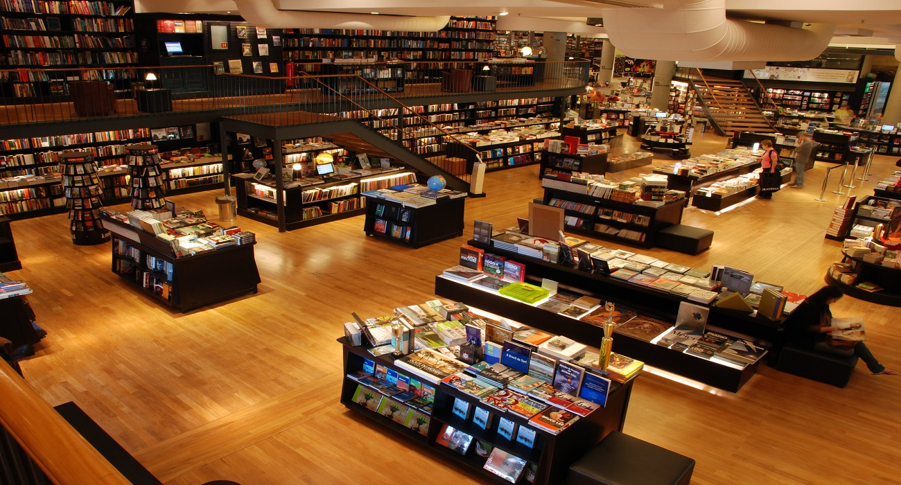

Nossa história teve o seu início em 1914, quando a Dona Isabella Fonseca Sempere, uma imigrante portuguesa, fundou no Largo do Ouvidor, em São Paulo, uma pequena livraria destinada ao comércio de livros usados. Em virtude da localização da livraria, muito próxima à Faculdade de Direito do Largo São Francisco, do interesse pessoal e conhecimento da literatura jurídica que a Sra.Isabella Sempere possuía, a então denominada "Livraria Acadêmica" tornou-se conhecida dos professores e estudantes de direito frequentadores da região e especializou-se no comércio de livros jurídicos, que representa, até os dias de hoje, um segmento importante nos nossos negócios.
 Primeira loja Sempere Livraria.Ao longo dos anos 70, o processo de crescimento e formação de uma rede de lojas se iniciou concretamente com a abertura da segunda Livraria Sempere, na Praça da Sé, marco central da capital de São Paulo. Na década de 80, com o crescimento do número de títulos publicados, viabiliza-se um serviço próprio de distribuição de livros. Em 1983, iniciou-se o processo de expansão da rede de estabelecimentos da Livraria, com a abertura de diversas lojas em outros estados brasileiros e em shopping centers.
Dona Isabella Sempere em sua primeira loja.Enquanto que nos anos 90, reafirmando seu pioneirismo com as publicações jurídicas, a Sempere passa a editar livros paradidáticos, obras de complementação do ensino das diversas matérias que compõem o currículo do ensino Fundamental e Médio. Ao final da década, a Sempere passa a editar livros nas áreas de Administração, Economia e Marketing destinados ao currículo do ensino de terceiro grau. Enquanto a unidade de varejo abre a primeira de uma série de megalivrarias, totalmente informatizadas.
 Uma das Livrarias Sempere atualmente.Em 1998, a Sempere conclui a aquisição da Editora New. E passa a comercializar seus produtos por meio da internet através do site www.sempere.com.br. Um dos primeiros sites de e-commerce do Brasil.
 Uma das Livrarias Sempere atualmente.  Uma das Livrarias Sempere atualmente.